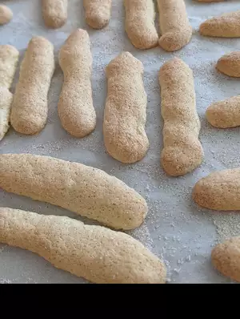

Ingredients
- 4 eggs, separated
- ⅔ cup white sugar/li>
- ⅞ cup all-purpose flour
- ½ teaspoon baking powder
Directions
- Preheat oven to 400 degrees F (205 degrees C). Line two 17 x 12 inch baking sheets with baking parchment. Fit large pastry bag with a plain 1/2 inch round tube.
- Place egg whites in bowl and beat on high until soft peaks start to form. Slowly add 2 tablespoons of the sugar and continue beating until stiff and glossy. In another bowl beat egg yolks and remaining sugar. Whip until thick and very pale in color.
- Sift flour and baking powder together on a sheet of wax paper. Fold half the egg whites into the egg yolk mixture. Fold in flour, and then add the remaining egg whites. Transfer mixture to pastry bag and pipe out onto prepared baking sheet. Bake 8 minutes.
Nutrition Facts
Per Serving: 25 calories; protein 0.8g; carbohydrates 4.6g; fat 0.4g; cholesterol 15.5mg; sodium 11mg.